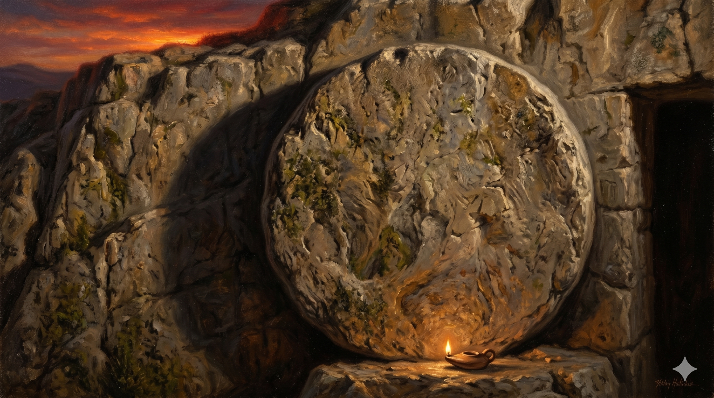

해가 저무는 저녁 빛 속에 돌로 막힌 무덤 앞에 조용히 앉아 있는 막달라 마리아와 다른 마리아 — 모든 것이 끝난 것 같은 그 자리에서, 그들은 마지막까지 곁을 지켰다
"아리마대의 부자 요셉이라 하는 사람이 왔으니 그도 예수의 제자라 빌라도에게 가서 예수의 시체를 달라 하니 이에 빌라도가 내어 주라 명령하거늘 요셉이 시체를 가져다가 깨끗한 세마포로 싸서 바위 속에 판 자기 새 무덤에 넣어 두고 큰 돌을 굴려 무덤 문에 놓고 가니 거기 막달라 마리아와 다른 마리아가 무덤을 향하여 앉아 있더라" — 마태복음 27:57-61
예수님의 시신을 무덤에 안치하고 큰 돌이 굴려지던 그 저녁, 제자들의 발자국 소리는 들리지 않았습니다. 두려움과 충격으로 흩어진 그들과 달리, 마태는 단 두 여인이 그 자리에 남아 있었다고 기록합니다. 막달라 마리아와 다른 마리아, 그들은 무덤을 향하여 앉아 있었습니다. '앉아 있더라'는 이 짧은 표현 속에는 말로 다 할 수 없는 깊은 슬픔과 함께, 끝까지 그 자리를 떠나지 않는 사랑의 결기가 담겨 있습니다. 해가 지고 어둠이 깔리는 시간, 아무도 없는 무덤 앞에서 그들은 홀로 그 비통함을 감당했습니다.
이 장면은 단순한 슬픔의 기록이 아닙니다. 마태는 이 두 여인이 정확히 어디에 무덤이 있는지를 목격자로서 확인했음을 강조합니다. 사흘 후 부활의 새벽, 가장 먼저 빈 무덤으로 달려갈 수 있었던 것은 바로 그들이 그 자리를 기억하고 있었기 때문입니다. 하나님은 그들의 눈물 어린 기다림을 헛되이 하지 않으셨습니다. 마지막까지 그 자리에 머문 사람이, 부활의 첫 소식을 듣는 사람이 되었습니다. 사랑으로 머문 자리가, 은혜의 시작점이 되었습니다.

큰 돌이 막혀 있는 무덤 입구 — 인간의 눈에는 끝처럼 보이지만, 하나님의 이야기는 아직 끝나지 않았다
삶에는 큰 돌이 굴려진 것 같은 순간이 찾아옵니다. 모든 것이 막히고, 빛이 사라진 것 같은 절망의 저녁이 있습니다. 그때 우리는 어디에 앉아 있습니까? 막달라 마리아는 무덤을 '향하여' 앉아 있었습니다. 등을 돌리지 않고, 그 아픔을 직면하며, 그래도 그 자리를 지켰습니다. 신앙은 때로 이처럼 침묵 속에서 자리를 지키는 것입니다. 해답이 없어도, 기적이 보이지 않아도, 그분을 향한 자리를 떠나지 않는 것입니다.
당신의 삶에 아직 열리지 않은 무덤 앞 같은 상황이 있습니까? 막달라 마리아처럼, 그 자리에서 일어나지 마십시오. 하나님은 우리가 포기한 그 자리에서 부활의 역사를 시작하시는 분입니다. 무덤을 향하여 앉아 있던 그 눈물이, 가장 먼저 빈 무덤의 증인이 되는 특권으로 이어졌습니다. 기다림은 헛되지 않습니다.
큰 돌이 굴려졌을 때 모두 떠났지만, 그들은 앉아 있었습니다.
마지막까지 그 자리를 지키는 사람이,
부활의 새벽을 가장 먼저 만납니다.